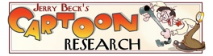
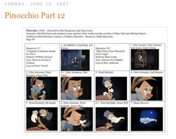

Web Resources
The online animation community is full of knowledgeable people, including historians, experts working in the field, archivists and students. Here is a sampling of websites where you can find information about a wide variety of animation-related subjects:

Web Resources






*NOTE* Most of these blogs are DENSE with further links to more and more online resources for the study of animation. I included a broad cross-section here, but taking a few hours (you will need it!) to peruse the further links on these sites will lead you to a much larger crop of websites.
Links from ASIFA (Association International du Film d'Animation OR the International Animated Film Association):
Main ASIFA Page (domestic and international chapters):
ASIFA Hollywood home page:
http://www.asifa-hollywood.org/
ASIFA animation archive:
http://www.animationarchive.org/
Links from Jerry’s Becks Cartoon Research page, including the Cartoon Brew blog:
http://www.cartoonresearch.com/
Michael Sporn’s Blog (Splog):
http://www.michaelspornanimation.com/splog/
More than just a blog. Michael is one of the many animators sharing his wisdom about the craft on the web. His Splog ncludes countless valuable links and resources, such as jpegs of story meetings, sketches, correspondence, rare photos with captions, etc.
Michael Mayerson’s Blog:
http://mayersononanimation.blogspot.com/
Contains similar content to Michael Sporn’s page. Also includes visual scene-by-scene breakdowns, or “mosaics,” of animation drafts (see right).
Amid Amidi’s Cartoon Modern blog:
http://cartoonmodern.blogsome.com/
Companion blog to Amidi’s book.
Michael Barrier’s website, with several articles from his fantastic publication Funnyworld (1970 – 1980), and
several interviews with animators posted full-text.
http://www.michaelbarrier.com/index.html
Amid Amidi’s Animation World and Animation World Magazine:
Animation Blast Magazine:
http://www.animationblast.com/